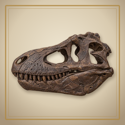

図鑑の事実の確かめ方Fossil Atlas: Dinosaur Dig — How we check the facts
最終更新：2026年11月7日 ・ 2回目の確認：2026年11月7日
決まり
- 実在の種・産地・地層・年代だけを載せます。ない化石や特徴は作りません。
- 化石ごとに、出典を2つ以上あたります。
- 説が分かれることは「〜と考えられている」と書き、図鑑と札に「説が分かれる」の印をつけます。
- 省くことはあっても、うそは書きません。
学名と年代を、2つのデータベースと照合（2026年11月5日）
Paleobiology Database（PBDB。研究者が化石の記録を集めたデータベース）と、図鑑の学名と地層を突き合わせました。種と地層の組は557、学名は474。403組は、そのまま一致しました。引っかかった158組を1つずつ見ると、ほとんどは PBDB の記録に地層の名前が入っていないか、植物や琥珀など PBDB の記録が少ない分野で、図鑑の誤りではありませんでした。よく見る価値があった13件のうち9件は、図鑑がすでに「説が分かれる」などで扱っていました。残る4件を直しました（属が移った学名1件、「説が分かれる」の印2件、地層の年代の幅1件）。
Wikidata（Wikipedia の仲間の、知識のデータベース）とも、同じ557組を照合しました。470組は名前が一致しました。学名が違って見えたのは4つで、どれも図鑑の誤りではありませんでした（Wikidata 側の誤字、綴りの揺れ、種の項目がなく上の分類を拾ったもの）。生きていた年代が図鑑の地層の年代と重ならないものは、1つもありませんでした。
PBDB や Wikidata に載っていないことが、そのまま誤りとは限りません。記録が少ない分野があるためです。
Web の出典で、主張を1つずつ確認（2026年11月6日・7日）
30の産地の資料にある965件の主張を、別々の出典で1つずつ確かめました。問題なし740件、要確認198件、食い違い20件でした。学名・地層・年代という芯で食い違ったものは、1つもありませんでした。食い違いは、1行の解説の数字や言い切り、古くなった説でした。食い違いと、要確認のうち直したほうがよいものを合わせて、30か所を直しました（アプリの文21か所、資料だけ9か所）。
2回目（11月7日）には、要確認だった196件（数え方を表の行に合わせ直した数）を、Wikipedia 以外の出典でもう一度調べました。84件は裏づけが取れ、20件は食い違いで、92件は要確認のまま残りました。アプリの文は15か所を直しました。1回目の直しの1つ（バージェス頁岩の割合）にも誤りが見つかったので、それも直しました。全体では、970件の主張のうち、問題なし838件、要確認92件、食い違い40件（1回目の20件を含み、すべて直してあります）です。
直した例
- ケントロサウルスの尾のトゲ：「時速50kmで振れた」を「秒速40m（時速140km）をこえる速さで振れた」に。元の論文は秒速40〜55m。広く引かれていた「時速50km」は、単位の取り違えでした。
- ダイアウルフ（ラ・ブレア）：「4,000頭をこえる」を「3,600頭をこえる」に。4,000 は標本の数で、個体の数ではありませんでした（ラ・ブレア・タールピッツの公式ページ）。
- バージェス頁岩：やわらかい体の生き物の割合。1回目に「約86%」と直しましたが、これはなかま（属）の割合でした。2回目に、ロイヤル・オンタリオ博物館の資料どおり「化石の数で約98%、属の数で約85%」に直しました。
- ニジェールサウルスの歯：「約1か月ごとに生えかわった」を「2週間〜1か月ごとに」に。2007年の研究は約1か月、2013年の研究は14日でした。
- クリオバトラクスの頭骨（南極）：2022年の見直しで疑問名（種として認めるには材料が足りない名前）になったため、札にそう書き、「説が分かれる」の印をつけました。
絵について
化石の絵は、描く前に実物の標本写真と論文の図を調べ、1枚ずつ体のつくり（歯や指の数、骨の形、姿勢）を確かめます。合わないものは描き直します。
復元画（生きた姿）は、その恐竜の全身骨格の絵に合わせて肉づけして描きます。皮膚や羽毛は化石の証拠に従い、色は推定です。図鑑の「根拠」に、出典と説が分かれる点を書いています。いま復元画があるのは12体です。
誤りを見つけたら
アプリの館長室の「図鑑の誤りを報告」か、メール fossilatlas.support@icloud.com で知らせてください。種や部位、地層の名前と、どこがどう違うか（できれば出典も）を書いていただけると助かります。
できていないこと
- 「要確認」のまま残っているものが92件あります（2回目のあと）。主に、2つ目の出典が見つからなかった大きさなどの数字、本文を読めなかった論文、中国語やポルトガル語の一次資料です。続けて確かめます。
- 出典は主に論文、博物館の資料、Wikipedia です。古生物学の専門家の監修は受けていません。
- 研究は進みます。新しい発見で変わることがあります。復元画は2025年時点の研究にもとづきます。
Last updated: 7 November 2026 · Second check: 7 November 2026
Our rules
- Only real species, sites, formations and ages. We never make up a fossil or a feature.
- At least two sources for every fossil.
- Where scientists disagree, we say "thought to" and mark it "Debated" in the Atlas and on the label.
- We may leave things out, but we do not write anything untrue.
Names and ages checked against two databases (5 November 2026)
We matched the Atlas's scientific names and formations against the Paleobiology Database (PBDB, a database of fossil records kept by researchers): 557 species–formation pairs and 474 scientific names. 403 pairs matched as they were. We went through the 158 pairs that were flagged one by one; most had no formation name in the PBDB record, or came from fields where the PBDB has few records, such as plants and amber, and were not errors in the Atlas. Of the 13 worth a closer look, 9 were already handled in the Atlas (for example, marked "Debated"). We fixed the other 4: one name whose genus has changed, two new "Debated" marks, and one wider age range for a formation.
We also matched the same 557 pairs against Wikidata (a knowledge base related to Wikipedia). 470 pairs had the same name. Four names looked different, and none was an error in the Atlas (a typo on the Wikidata side, a spelling variant, and lookups that found a higher group because the species has no entry). No species had a lifespan outside the age of its formation in the Atlas.
Missing from the PBDB or Wikidata does not mean wrong: some fields have few records there.
Every claim checked against sources on the web (6 and 7 November 2026)
We checked the 965 claims in our 30 site notes one by one against independent sources: 740 were fine, 198 still need checking, and 20 disagreed. None of the disagreements was about a scientific name, a formation or an age. They were numbers or firm wording in one-line descriptions, or ideas that have since been revised. We fixed 30 places in all, the disagreements and the unverified points worth changing (21 in the app's text, 9 in our notes only).
In a second check (7 November), we looked again at the 196 points still open (recounted by table row) using sources other than Wikipedia. 84 were confirmed, 20 disagreed, and 92 still need checking. We fixed 15 places in the app's text. One of our first-round fixes (the Burgess Shale share) turned out to be wrong too, and we fixed it. Overall, of 970 claims, 838 are fine, 92 still need checking and 40 disagreed (including the first 20; all of them have been fixed).
Some things we fixed
- Kentrosaurus's tail spikes: "swung at 50 km/h" became "swung at over 40 m a second (140 km/h)". The original paper gives 40–55 m/s; the widely quoted 50 km/h was a mix-up of units.
- Dire wolves at La Brea: "over 4,000 animals" became "over 3,600". 4,000 was the number of specimens, not of animals (the La Brea Tar Pits' own page).
- The Burgess Shale: the share of soft-bodied animals. Our first check changed it to "about 86%", but that was the share of genera. The second check made it "about 98% of the fossils and about 85% of the genera", as the Royal Ontario Museum gives.
- Nigersaurus's teeth: "replaced about once a month" became "every two weeks to a month". A 2007 study gave about a month; a 2013 study gave 14 days.
- The skull of Cryobatrachus (Antarctica): a 2022 review called the name doubtful (too little material to define a species), so the label now says so and is marked "Debated".
About the pictures
Before each fossil is drawn, photos of real specimens and figures from papers are looked up, and every picture is checked for anatomy (the number of teeth and fingers, the shape of the bones, the posture). Pictures that get it wrong are drawn again.
Life restorations are drawn over each dinosaur's skeleton picture. Skin and feathers follow the fossil evidence; the colours are estimated. "Sources" in the Atlas gives the sources and the debated points for each one. There are 12 life restorations so far.
If you spot a mistake
Use "Report an error in the Atlas" in the Curator tab, or email fossilatlas.support@icloud.com. Please tell us the species, part or formation, and what is wrong (with a source, if you have one).
What we have not done yet
- 92 points still need checking after the second check: mostly sizes and other numbers for which we could not find a second source, papers we could not read in full, and primary sources in Chinese or Portuguese. We keep working through them.
- Our sources are mainly papers, museum records and Wikipedia. The Atlas has not been reviewed by a palaeontologist.
- Science moves on, and new finds can change things. The life restorations are based on research as of 2025.